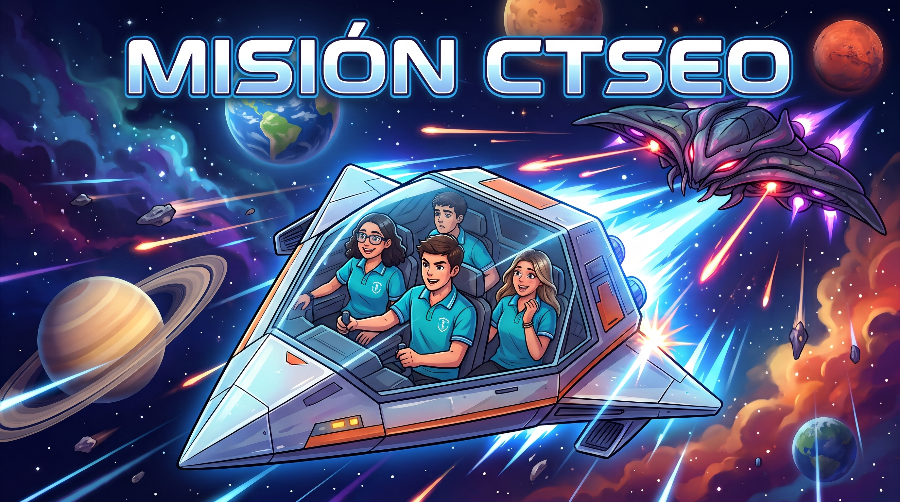
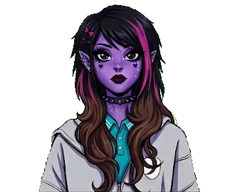
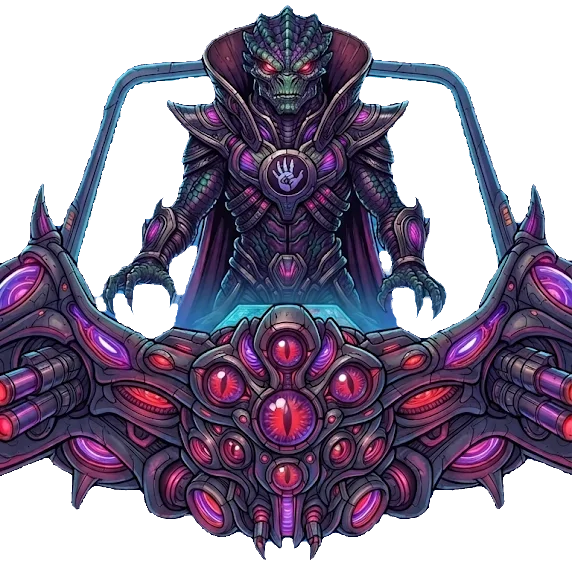
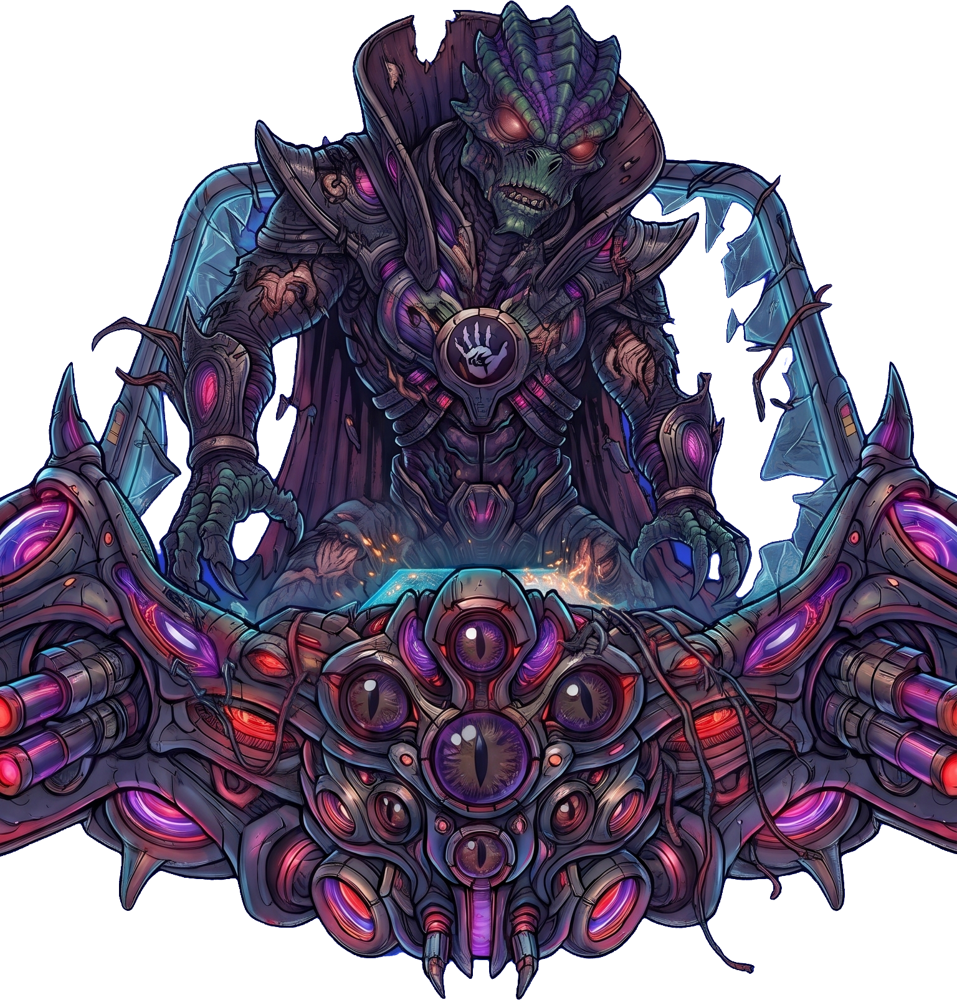

¡Defendiendo el Sistema Solar de la Flota Alienígena!
Coloca los planetas en su orden orbital verdadero para activar el perímetro de defensa. Cada planeta te revelará datos científicos vitales para vencer al Comandante Zorgon en una batalla de ingenio.
Ordena los Planetas: Arrastra cada planeta a su órbita correcta desde el Sol (#1 más cercano al #8 más lejano).
Recibe las Transmisiones: Nuestra nave avanzará en línea desde el Sol y un tripulante te revelará un dato clave de cada planeta.
Batalla de Ingenio: ¡Responde correctamente 6 preguntas sobre los datos aprendidos para derrotar al Comandante Zorgon!

Dato del planeta aquí...

"¡Defensores del Sistema Solar, prueben su valía con su conocimiento o sientan el terror de mi furia!"

"¡Hoy han probado su conocimiento y me retiro, pero volveré y me vengaré de ustedes y su pequeño sistema!"
El Comandante Zorgon destruyó tus reservas de energía. ¡Repasa los datos espaciales y vuelve a intentarlo!
¡El Comandante Zorgon huyó y el Sistema Solar fue salvado!